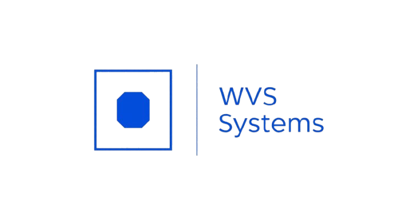
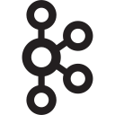

Document Management
Upload, metadata, versioning, full-text search and audit trail for document-heavy business operations.

Upload, metadata, versioning, full-text search and audit trail for document-heavy business operations.
OCR, content extraction and intelligent search to reduce manual review and accelerate document workflows.
Sobre a WVS
Apoiamos empresas brasileiras na digitalização de jornadas críticas, conectando sistemas legados, canais digitais e equipes internas em um único fluxo confiável. Atuamos lado a lado com seu time para descobrir oportunidades, priorizar iniciativas e entregar releases frequentes.
Nossas squads combinam engenharia, produto e governança para que cada ciclo gere valor mensurável. Seja para lançar um novo serviço, ganhar eficiência ou reforçar a conformidade, criamos arquiteturas preparadas para escalar.
"Nosso compromisso é transformar operações complexas em experiências simples e orquestradas, com performance e segurança end-to-end."
Confiança construída
Atuamos com fintechs, varejistas, indústrias e prestadoras de serviço em projetos de alto impacto, criando plataformas que suportam crescimento exponencial.
Nosso compromisso
Implementamos plataformas que eliminam retrabalhos, reduzem riscos e dão visibilidade em tempo real do ciclo completo — da captação ao pós-venda.
O que fazemos
Arquiteturas componíveis, APIs e integrações seguras desenhadas para o ritmo do seu negócio.
Workshops, priorização e roadmaps que alinham tecnologia, finanças e operação.
Squads completas de engenharia, QA e UX para acelerar entregas sem perder governança.
Monitoramento proativo, SLAs claros e adequação regulatória contínua.
Produto
The WVS Document Management System centralizes business-critical files, enriches them with metadata, extracts content with OCR and keeps every version, permission and workflow decision traceable.
Organize contracts, customer records, claims, policies and operational files with metadata, versioning and full-text search.
End-to-end traceability covers uploads, changes, reviews, approvals, permissions and retention policies.
Route documents to the right team, flag missing information and monitor SLA across review, compliance and operations.
Cliente em produção
Implementamos o DMS na Anultech para garantir governança sobre contratos e biometria em seus fluxos de onboarding. A plataforma oferece visibilidade em tempo real para o time comercial e reduz o tempo de aprovação de dossiês sensíveis.
Google Ads ready
Instead of sending paid traffic to a generic company page, WVS can speak directly to each buyer intent: DMS, financial services, insurance, OCR and document intelligence.
Secure storage, metadata, version control, search, permissions and audit trail for companies replacing scattered folders and manual controls.
Retention, auditability, customer documents, contract evidence and compliance workflows for document-intensive financial operations.
Policies, claims, customer documents, contracts and audit evidence managed in one traceable document workflow.
Read files, extract content, improve search and reduce manual review with OCR pipelines connected to your operational systems.
Lead generation
For an enterprise DMS, the website should qualify demand and move prospects to a demo. Campaign performance can then be measured by lead, qualified lead, demo and acquisition cost.
Request a DemoComo fazemos
Mapeamos jornadas, métricas e integrações críticas para definir o MVP certo.
Sprints curtos, demos frequentes e adaptação contínua ao feedback do negócio.
Domínios bem definidos, componentes reutilizáveis e observabilidade nativa.
Regras centralizadas garantem experiências consistentes em loja, app, web e parceiros.
Incorporamos rapidamente novos produtos e integrações sem reescrever o core.
Governança sobre dados, acessos e auditoria em conformidade com as regras do setor.
Impacto em números
Por que escolher a WVS?
Mais de 12 anos construindo soluções para finanças, varejo, energia e educação.
Estratégias feitas sob medida, respeitando contexto, legado e objetivos de cada cliente.
Cada entrega vem com indicadores claros e planos de evolução contínua.
Tecnologias




Vamos conversar
Conte para a WVS Systems quais desafios precisam ser acelerados. Retornamos com um plano de ação em até 48 horas.